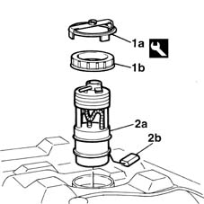
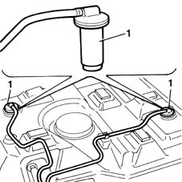
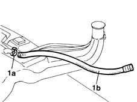
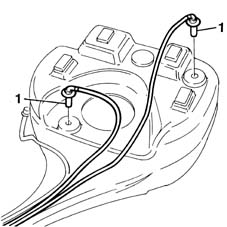

1040A22 fuel tank - r + r for versions with evaporation control system for replacement
- Path
- Procedures > 10 ENGINE UNIT > 1040 FUEL TANK AND PIPES > 1040A FUEL TANK AND COMPONENTS > 1040A22 fuel tank - r + r for versions with evaporation control system for replacement
- Kind
- repair procedure (removal / refitting; the operation number is the code)
- Applies to
- engines: 1.6 16v; all production periods
- Interactive page
- https://sloeber94.github.io/elrnDB-fMltpl/en/#/2891244
Applies to: engines: 1.6 16v; all production periods
 Removing
Removing
 Refitting
RefittingWith the ignition key in the OFF position, disconnect the battery negative terminal.
 | Name | Connector |
|---|---|---|
- | Battery |
7050A90 rear seat (one) - r re - repair with seat removed
7040L14 panel brackets (1) covering seat attachments to passenger compartment floor - r r
1040A20 FUEL TANK - R + R AND DECANT FUEL FOR VERSIONS WITH EVAPORATION CONTROL SYSTEM
1. Use wrench (1a) to unscrew lock-nut (1b).
2. Remove fuel pump (2a) together with fuel level gauge control (2b).
 | Name | Country |
|---|---|---|
1a | Key | 1.870.736.000 |

Applies to: engines: 1.6 16v; all production periods
1. Remove the float valves and pipes.

Applies to: engines: 1.6 16v; all production periods
1. Break collar (1a) and remove pipe (1b) connected to the vapour separator.

Applies to: engines: 1.6 16v; all production periods
Refitting
RemovingFit the vapour separator connection pipe and secure using a new collar.
Fit the float valves and pipes.
Fit the fuel pump.
Use the appropriate tool to tighten the lock-nut securing the pump in its housing to torque.
| Name | Country |
|---|---|---|
- | Key | 1.870.736.000 |
 | Fastening | Component | Ø | Value (daNm) |
|---|---|---|---|---|
- | Ring nut | SUBMERGED FUEL PUMP RING NUT | - | 6 |
1040A20 FUEL TANK - R + R AND DECANT FUEL FOR VERSIONS WITH EVAPORATION CONTROL SYSTEM
7040L14 panel brackets (1) covering seat attachments to passenger compartment floor - r r
7050A90 rear seat (one) - r re - repair with seat removed
With the ignition key in OFF position, connect the battery negative terminal.
| Name | Connector |
|---|---|---|
- | Battery |
Applies to: engines: 1.6 16v; all production periods; only with equipment: BIPOWER
Removing
Refitting4450B11 WHEEL (one) rear - R.R.
1040A20 FUEL TANK - R + R AND DECANT FUEL FOR VERSIONS WITH EVAPORATION CONTROL SYSTEM
1040A71 submerged pump assembly complete with fuel guage - r r with tank removed
1. Remove the float valves and pipes.

Applies to: engines: 1.6 16v; all production periods; only with equipment: BIPOWER
Refitting
RemovingFit the float valves, complete with pipes, on the new tank.
1040A71 submerged pump assembly complete with fuel guage - r r with tank removed
1040A20 FUEL TANK - R + R AND DECANT FUEL FOR VERSIONS WITH EVAPORATION CONTROL SYSTEM
Topics linked from this page (6)
- 1040A20 FUEL TANK - R + R AND DECANT FUEL FOR VERSIONS WITH EVAPORATION CONTROL SYSTEM
- 1040A71 submerged pump assembly complete with fuel guage - r r with tank removed
- 4450B11 WHEEL (one) rear - R.R.
- 7040L14 panel brackets (1) covering seat attachments to passenger compartment floor - r r
- 7050A90 rear seat (one) - r re - repair with seat removed
- A1 Battery